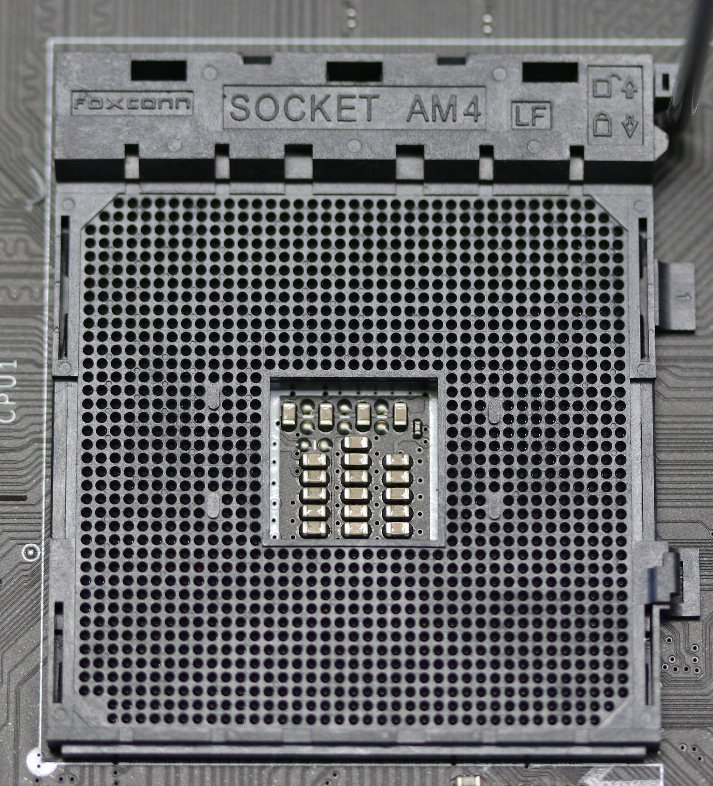

A piacon jelenleg nagyon sok processzor gyártó cég van, de az asztali számítógépek között a két legelterjedtebb processzorgyártó az Intel és az AMD. Ez a két fél és tábora között nincs egyetértés abban, hogy melyik a processzor. A két csoportot általában kék és vörös csapatnak hívják. Azt, hogy melyik cég gyártja a jobb processzorokat, azt nagyon sok paraméter befolyásolja, igy nem lehet kimondani egy tiszta győzelmet semelyik fél részére sem. De az alábbi szövegben megpróbálok rámutatni a hasonlóságokra és ellentétekre, és megállapítani, hogy melyik a jobb és milyen értelemben. De először is vessünk egy pillantást mind két gyártó múltjára.
Intel:
Az Intelt 1968. július 18-án a kaliforniai Mountain View-ban alapította Gordon E. Moore vegyész és Robert Noyce fizikus és az integrált áramkör társfeltalálója. Moore és Noyce elhagyta a Fairchild Semiconductort, hogy megalapítsa az Intelt. Az Intel harmadik alkalmazottja Andy Grove vegyészmérnök volt, aki később az 1980-as és a 90-es évek nagy részében vezette a vállalatot. Az Intel működésének első évébe számos mérföldkőnek számító esemény történt a cégen belül, beleértve az első termék elkészítésé (Intel 3101 RAM), annak első eladását és az első logót elkészítését, valamint számos kulcsfontosságú újítást, köztük a fém-oxid félvezető és a szilíciumkapus technológiák kifejlesztését. Az első programozható mikroprocesszoruk az Intel 4004 volt, amelyet 1972-ben fejlesztettek ki és bocsájtottak piacra. 1973-ban megcsinálták az első fehérszobát (pormentesen zárt, steril gyárterület), ahol sokkal hatékonyabban és nagyobb pontossággal bírtak mikroelektronikákat készíteni. Ez az időszak után nagyon felgyorsult a fejlesztés és termelés. Ezek után egy újabb nagyobb lépés 1993-ban jött, mikor piacra dobták az Intel Pentium-ot. 2005-ben alkották meg az első több magos processzort, a Pentium D-t. Végül 2007-ben létrehozták az első Intel Core I szériás processzort, melyek közül az I7 volt a legerősebb abban az időben. Azóta is megállás nélkül fejlődik a cég és a processzorai is. A jelenlegi legerősebb asztaligép processzoruk az Intel Core I9 13900KS, még a legerősebb szerverprocesszoruk pedig a Intel Xeon Platinum 9282. Az Intel a (legrégebbi processzorokat leszámítva) 2000-es évek óta LGA foglalatot használ processzoraihoz.


AMD:
A céget Jerry Sanders 1969-ben alapította meg a munkatársaival együtt. Az AMD korai termékei elsősorban memóriachipek és egyéb számítógép-alkatrészek voltak. Az első piacra dobott processzoruk az AMD AM2900 volt, amelyet 1975-ben terveztek és adtak el először. Az AMD első nagy lépése 2000-ben volt, mikor piacra dobták az első olyan processzort, amelynek órajele elérte az 1Ghz-t, ez a processzor volt az AMD Athlon. A cég később a mikroprocesszorok piacán kezdett el jobban terjeszkedett, versenyben állva az iparágban fő riválisával, az Intellel. 2003-ban az AMD bejelentette az Opteron chipet. Ez volt az első számítógépes chip, amelyet az AMD szerverekben való használatra készített. Ez felgyorsították a vállalat üzleti terjeszkedését. Az AMD nagyon sok újítást hozott be a személyi számítás világába, de egy nagy ugrás 2017-ben történt a cég életében mikor, ugyanis piacra bocsájtották az új generációs processzoraikat, a Ryzen, a Epyc és a Threadripper. Az AMD jelenlegi legerősebb asztaligép processzora az AMD Ryzen 9 7950x, és a legerősebb szerverprocesszora pedig a AMD EPYC™ 9654P. Az AMD mindig is arról volt híres, hogy a processzorai PGA foglalatot használtak, de 2022-től a legújabb processzoraikat LGA foglalattal szerelték fel.

Készítette a szöveget: Harazin Noel
Források:
Előzetes tudásaim
https://timeline.intel.com/
https://www.thestreet.com/technology/history-of-amd
https://www.intel.com/content/www/us/en/products/sku/232167/intel-core-i913900ks-processor-36m-cache-up-to-6-00-ghz/specifications.html
https://www.amd.com/en/product/12151